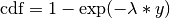

Probability tools (ryprob)¶
Overview¶
The functions in this module is used in the staring array model. It was originally used in Konnik’s staring array model (he sourced it from somewhere else). Credits for the original source are included in each of the functions.
Code Overview¶
This module provides a few probability utility functions, most of which are used in the high level CCD and CMOS staring array model pyradi.rystare.
One of the utility functions provide a packaged version of scikit learn’s kernel density estimation tool to provide a better estimate than does a simple histogram.
Module functions¶
-
pyradi.ryprob.distribution_exp(distribParams, out, funcName)¶ Exponential Distribution
This function is meant to be called via the distributions_generator function.

- Mean = 1/lambda
- Variance = 1/lambda^2
- Mode = lambda
- Median = log(2)/lambda
- Skewness = 2
- Kurtosis = 6
GENERATING FUNCTION:
PARAMETERS: distribParams[0] is lambda - inverse scale or rate (lambda>0)
SUPPORT: y, y>= 0
CLASS: Continuous skewed distributions
NOTES: The discrete version of the Exponential distribution is the Geometric distribution.
USAGE:
- y = randraw(‘exp’, lambda, sampleSize) - generate sampleSize number of variates from the Exponential distribution with parameter ‘lambda’;
EXAMPLES:
- y = randraw(‘exp’, 1, [1 1e5]);
- y = randraw(‘exp’, 1.5, 1, 1e5);
- y = randraw(‘exp’, 2, 1e5 );
- y = randraw(‘exp’, 3, [1e5 1] );
SEE ALSO: GEOMETRIC, GAMMA, POISSON, WEIBULL distributions http://en.wikipedia.org/wiki/Exponential_distribution
-
pyradi.ryprob.distribution_lognormal(distribParams, out, funcName)¶ THe Log-normal Distribution (sometimes: Cobb-Douglas or antilognormal distribution)
This function is meant to be called via the distributions_generator function.
pdf = 1/(y*sigma*sqrt(2*pi)) * exp(-1/2*((log(y)-mu)/sigma)^2) cdf = 1/2*(1 + erf((log(y)-mu)/(sigma*sqrt(2))));
- Mean = exp( mu + sigma^2/2 );
- Variance = exp(2*mu+sigma^2)*( exp(sigma^2)-1 );
- Skewness = (exp(1)+2)*sqrt(exp(1)-1), for mu=0 and sigma=1;
- Kurtosis = exp(4) + 2*exp(3) + 3*exp(2) - 6; for mu=0 and sigma=1;
- Mode = exp(mu-sigma^2);
PARAMETERS: mu - location, sigma - scale (sigma>0)
SUPPORT: y, y>0
CLASS: Continuous skewed distribution
NOTES:
- The LogNormal distribution is always right-skewed
- Parameters mu and sigma are the mean and standard deviation of y in (natural) log space.
- mu = log(mean(y)) - 1/2*log(1 + var(y)/(mean(y))^2)
- sigma = sqrt( log( 1 + var(y)/(mean(y))^2) )
USAGE:
- randraw(‘lognorm’, [], sampleSize) - generate sampleSize number of variates from the standard Lognormal distribution with location parameter mu=0 and scale parameter sigma=1
- randraw(‘lognorm’, [mu, sigma], sampleSize) - generate sampleSize number of variates from the Lognormal distribution with location parameter ‘mu’ and scale parameter ‘sigma’
EXAMPLES:
- y = randraw(‘lognorm’, [], [1 1e5]);
- y = randraw(‘lognorm’, [0, 4], 1, 1e5);
- y = randraw(‘lognorm’, [-1, 10.2], 1e5 );
- y = randraw(‘lognorm’, [3.2, 0.3], [1e5 1] );
-
pyradi.ryprob.distribution_inversegauss(distribParams, out, funcName)¶ The Inverse Gaussian Distribution
This function is meant to be called via the distributions_generator function.
The Inverse Gaussian distribution is left skewed distribution whose location is set by the mean with the profile determined by the scale factor. The random variable can take a value between zero and infinity. The skewness increases rapidly with decreasing values of the scale parameter.
pdf(y) = sqrt(_lambda/(2*pi*y^3)) * exp(-_lambda./(2*y).*(y/mu-1).^2)
cdf(y) = normcdf(sqrt(_lambda./y).*(y/mu-1)) + exp(2*_lambda/mu)*normcdf(sqrt(_lambda./y).*(-y/mu-1))
where normcdf(x) = 0.5*(1+erf(y/sqrt(2))); is the standard normal CDF
- Mean = mu
- Variance = mu^3/_lambda
- Skewness = sqrt(9*mu/_lambda)
- Kurtosis = 15*mean/scale
- Mode = mu/(2*_lambda)*(sqrt(9*mu^2+4*_lambda^2)-3*mu)
PARAMETERS: mu - location; (mu>0), _lambda - scale; (_lambda>0)
SUPPORT: y, y>0
CLASS: Continuous skewed distribution
NOTES:
- There are several alternate forms for the PDF, some of which have more than two parameters
- The Inverse Gaussian distribution is often called the Inverse Normal
- Wald distribution is a special case of The Inverse Gaussian distribution where the mean is a constant with the value one.
- The Inverse Gaussian distribution is a special case of The Generalized Hyperbolic Distribution
USAGE:
- randraw(‘ig’, [mu, _lambda], sampleSize) - generate sampleSize number of variates from the Inverse Gaussian distribution with parameters mu and _lambda;
EXAMPLES:
- y = randraw(‘ig’, [0.1, 1], [1 1e5]);
- y = randraw(‘ig’, [3.2, 10], 1, 1e5);
- y = randraw(‘ig’, [100.2, 6], 1e5 );
- y = randraw(‘ig’, [10, 10.5], [1e5 1] );
SEE ALSO: WALD distribution
Method:
There is an efficient procedure that utilizes a transformation yielding two roots. If Y is Inverse Gauss random variable, then following [1] we can write: V = _lambda*(Y-mu)^2/(Y*mu^2) ~ Chi-Square(1)
i.e. V is distributed as a _lambda-square random variable with one degree of freedom. So it can be simply generated by taking a square of a standard normal random number. Solving this equation for Y yields two roots:
y1 = mu + 0.5*mu/_lambda * ( mu*V - sqrt(4*mu*_lambda*V + mu^2*V.^2) ); and y2 = mu^2/y1;
In [2] showed that Y can be simulated by choosing y1 with probability mu/(mu+y1) and y2 with probability 1-mu/(mu+y1)
References: [1] Shuster, J. (1968). On the Inverse Gaussian Distribution Function, Journal of the American Statistical Association 63: 1514-1516.
[2] Michael, J.R., Schucany, W.R. and Haas, R.W. (1976). Generating Random Variates Using Transformations with Multiple Roots, The American Statistician 30: 88-90.
-
pyradi.ryprob.distribution_logistic(distribParams, out, funcName)¶ The Logistic Distribution
This function is meant to be called via the distributions_generator function.
The logistic distribution is a symmetrical bell shaped distribution. One of its applications is an alternative to the Normal distribution when a higher proportion of the population being modeled is distributed in the tails.
pdf(y) = exp((y-a)/k)./(k*(1+exp((y-a)/k)).^2)
cdf(y) = 1 ./ (1+exp(-(y-a)/k))
- Mean = a
- Variance = k^2*pi^2/3
- Skewness = 0
- Kurtosis = 1.2
PARAMETERS: a - location, k - scale (k>0);
SUPPORT: y, -Inf < y < Inf
CLASS: Continuous symmetric distribution
USAGE:
- randraw(‘logistic’, [], sampleSize) - generate sampleSize number of variates from the standard Logistic distribution with location parameter a=0 and scale parameter k=1;
- Logistic distribution with location parameter ‘a’ and scale parameter ‘k’;
EXAMPLES:
- y = randraw(‘logistic’, [], [1 1e5]);
- y = randraw(‘logistic’, [0, 4], 1, 1e5);
- y = randraw(‘logistic’, [-1, 10.2], 1e5 );
- y = randraw(‘logistic’, [3.2, 0.3], [1e5 1] );
Method:
Inverse CDF transformation method.
-
pyradi.ryprob.distribution_wald(distribParams, out, funcName)¶ The Wald Distribution
This function is meant to be called via the distributions_generator function.
The Wald distribution is as special case of the Inverse Gaussian Distribution where the mean is a constant with the value one.
pdf = sqrt(chi/(2*pi*y^3)) * exp(-chi./(2*y).*(y-1).^2);
- Mean = 1
- Variance = 1/chi
- Skewness = sqrt(9/chi)
- Kurtosis = 3+ 15/scale
PARAMETERS: chi - scale parameter; (chi>0)
SUPPORT: y, y>0
CLASS: Continuous skewed distributions
USAGE:
- randraw(‘wald’, chi, sampleSize) - generate sampleSize number of variates from the Wald distribution with scale parameter ‘chi’;
EXAMPLES:
- y = randraw(‘wald’, 0.5, [1 1e5]);
- y = randraw(‘wald’, 1, 1, 1e5);
- y = randraw(‘wald’, 1.5, 1e5 );
- y = randraw(‘wald’, 2, [1e5 1] );
-
pyradi.ryprob.distributions_generator(distribName=None, distribParams=None, sampleSize=None)¶ The routine contains various models for simulation of FPN (DSNU or PRNU).
This function allows the user to select the distribution by name and pass requisite parameters in a list (which differs for different distrubutions). The size of the distribution is defined by a scalar or list.
sampleSize follows Matlab conventions:
- if None then return a single scalar value
- if scalar int N then return NxN array
- if tuple then return tuple-sized array
- Possible values for distribName:
- ‘exp’,’exponential’‘lognorm’,’lognormal’,’cobbdouglas’,’antilognormal’‘ig’, ‘inversegauss’, ‘invgauss’‘logistic’‘wald’
- Args:
- distribName (string): required distribution namedistribParams ([float]): list of distribution parameters (see below)sampleSize (None,int,[int,int]): Size of the returned random set
- Returns:
- out (float, np.array[N,M]): set of random variables for selected distribution.
- Raises:
- No exception is raised.
The routine set generates various types of random distributions, and is based on the code randraw by Alex Bar Guy & Alexander Podgaetsky These programs are distributed in the hope that they will be useful, but WITHOUT ANY WARRANTY; without even the implied warranty of MERCHANTABILITY or FITNESS FOR A PARTICULAR PURPOSE.
Author: Alex Bar Guy, comments to alex@wavion.co.il
-
pyradi.ryprob.validateParam(funcName=None, distribName=None, runDistribName=None, distribParamsName=None, paramName=None, param=None, conditionStr=None)¶ Validate the range and number of parameters
- Args:
- funcName (string): distribution namedistribName (string): distribution namerunDistribName (string): run distribution namedistribParamsNameparamNameparamconditionStr
- Returns:
- True if the requirements are matched
- Raises:
- No exception is raised.
-
pyradi.ryprob.checkParamsNum(funcName, distribName, runDistribName, distribParams, correctNum)¶ See if the correct number of parameters was supplied. More than one number may apply
- Args:
- funcName (string): distribution namedistribName (string): distribution namedistribParams ([float]): list of distribution parameters (see below)correctNum ([int]): list with the possible numbers of parameters
- Returns:
- True if the requirements are matched
- Raises:
- No exception is raised.